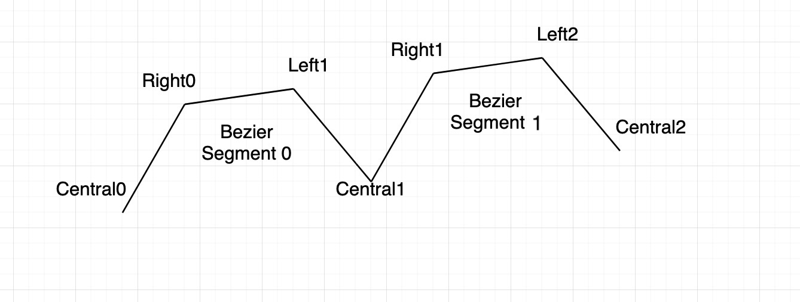

Using 2D Paths
Path2DParam represents a single Cubic Bezier curve in Autograph.
A GeomGroup2DParam contains a list of Path2DParam. For each path, a boolean operation can be specified with the Geom2DParam.booleanOperation parameter.
You can retrieve the final composite geometry (also applying any modifier on it) by calling Geom2DParam.getGeometry().
Accessing the GeomGroup2D Param
The GeomGroup2DParam are usually found on a Shape generator of a 2D layer.
It can be accessed as any other Param:
layer = Autograph.Layer2D()
gen = Autograph.Effect('Autograph.ShapeLayerRenderEffect')
layer.source.setGeneratorEffect(gen)
shapeGroup = gen.param('content')
childGroup = Autograph.ShapeGroupParam()
shapeGroup.addParam(childGroup)
shapeGroup = childGroup
shapeGroup.setDisplayName('Ellipse 1')
pathGroup = Autograph.GeomGroup2DParam()
pathGroup.setDisplayName('My Path Group')
shapeGroup.addParam(pathGroup)
Creating new Path2DParam
You can create a new Path2DParam and insert it in a GeomGroup2DParam
path = Autograph.Path2DParam()
pathGroup.addParam(path)
path.setDisplayName('Tracé 1')
path.insertControlPoint(0, 383.452392578125, -220.033996582031)
path.setControlPoint(Autograph.KeyFrame.InvalidTime, 0, 383.452392578125, -220.033996582031, Autograph.Path2DParam.PointType.Left)
path.setControlPoint(Autograph.KeyFrame.InvalidTime, 0, 209.996337890625, -393.490051269531, Autograph.Path2DParam.PointType.Right)
path.insertControlPoint(1, -244.687744140625, -220.033996582031)
path.setControlPoint(Autograph.KeyFrame.InvalidTime, 1, -71.231689453125, -393.490051269531, Autograph.Path2DParam.PointType.Left)
path.setControlPoint(Autograph.KeyFrame.InvalidTime, 1, -383.45263671875, -81.26904296875, Autograph.Path2DParam.PointType.Right)
path.insertControlPoint(2, -244.687744140625, 282.478149414062)
path.setControlPoint(Autograph.KeyFrame.InvalidTime, 2, -383.45263671875, 143.71337890625, Autograph.Path2DParam.PointType.Left)
path.setControlPoint(Autograph.KeyFrame.InvalidTime, 2, -133.67578125, 393.490051269531, Autograph.Path2DParam.PointType.Right)
path.insertControlPoint(3, 157.322021484375, 282.478149414062)
path.setControlPoint(Autograph.KeyFrame.InvalidTime, 3, 46.31005859375, 393.490051269531, Autograph.Path2DParam.PointType.Left)
path.setControlPoint(Autograph.KeyFrame.InvalidTime, 3, 246.13134765625, 193.668701171875, Autograph.Path2DParam.PointType.Right)
path.insertControlPoint(4, 157.322021484375, -39.1295471191406)
path.setControlPoint(Autograph.KeyFrame.InvalidTime, 4, 246.13134765625, 49.6799621582031, Autograph.Path2DParam.PointType.Left)
path.setControlPoint(Autograph.KeyFrame.InvalidTime, 4, 86.2744140625, -110.177124023438, Autograph.Path2DParam.PointType.Right)
path.insertControlPoint(5, -99.96435546875, -39.1295471191406)
path.setControlPoint(Autograph.KeyFrame.InvalidTime, 5, -28.916748046875, -110.177124023438, Autograph.Path2DParam.PointType.Left)
path.setControlPoint(Autograph.KeyFrame.InvalidTime, 5, -156.802490234375, 17.7085571289062, Autograph.Path2DParam.PointType.Right)
path.insertControlPoint(6, -99.96435546875, 166.699371337891)
path.setControlPoint(Autograph.KeyFrame.InvalidTime, 6, -156.802490234375, 109.861358642578, Autograph.Path2DParam.PointType.Left)
path.setControlPoint(Autograph.KeyFrame.InvalidTime, 6, -54.493896484375, 212.169860839844, Autograph.Path2DParam.PointType.Right)
path.insertControlPoint(7, 64.698974609375, 166.699371337891)
path.setControlPoint(Autograph.KeyFrame.InvalidTime, 7, 19.228515625, 212.169860839844, Autograph.Path2DParam.PointType.Left)
path.setControlPoint(Autograph.KeyFrame.InvalidTime, 7, 101.075439453125, 130.323059082031, Autograph.Path2DParam.PointType.Right)
path.insertControlPoint(8, 64.698974609375, 34.9688720703125)
path.setControlPoint(Autograph.KeyFrame.InvalidTime, 8, 101.075439453125, 71.3452758789062, Autograph.Path2DParam.PointType.Left)
path.setControlPoint(Autograph.KeyFrame.InvalidTime, 8, 35.597900390625, 5.86776733398438, Autograph.Path2DParam.PointType.Right)
path.insertControlPoint(9, -40.685546875, 34.9688720703125)
path.setControlPoint(Autograph.KeyFrame.InvalidTime, 9, -11.58447265625, 5.86776733398438, Autograph.Path2DParam.PointType.Left)
path.setControlPoint(Autograph.KeyFrame.InvalidTime, 9, -63.96630859375, 58.249755859375, Autograph.Path2DParam.PointType.Right)
path.insertControlPoint(10, -40.685546875, 119.276458740234)
path.setControlPoint(Autograph.KeyFrame.InvalidTime, 10, -63.96630859375, 95.9955444335938, Autograph.Path2DParam.PointType.Left)
path.setControlPoint(Autograph.KeyFrame.InvalidTime, 10, -40.685546875, 119.276458740234, Autograph.Path2DParam.PointType.Right)
Editing Control points
A Path2DParam internally stores 2 cubic bezier curves: One for the main contour and one for the feather contour.
When you add control points, the feather control points are simultaneously added to the path.
Each point added to the list actually adds 3 control points: The Left bezier control point, followed by the Central point (the curve passes by this point), followed by the Right control point.
The following figure explains how control points are connected
{kind=link}

# Create a rectangle
path.insertControlPoint(-1, 0., 0.)
path.insertControlPoint(-1, 0., 100.)
path.insertControlPoint(-1, 100., 100.)
path.insertControlPoint(-1, 100., 0.)
path.closed = True
If the Path2DParam.closed attribute is set to True, the path will be closed.
For convenience, the GeomGroup2DParam.setToPath() function can take a Path2D and create automatically the corresponding Path2DParam . This is easier to do than manually creating the Path2DParam and setting control points.